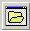

- cestu, kde chceme súbor hľadať
- meno súboru - FileName
a v object inspector alebo príkazmi možno pred zavolaním okna nastaviť nejaké vlastnosti
- filter - jeden alebo viacero filtrov, ktoré vyfiltrujú zobrazované súbory v prechádzaných priečinkov
- FilterIndex
- InitialDir
- DefaultExt
Súbor možno nájsť kliknutím naň alebo zapísaním jeho mena. Funkcia nadobúda logickú hodnotu TRUE - ak užívateľ stlačí OK a FALSE ak stlačí Storno alebo okno len zavrie. Ak stlačíme OK meno zvoleného súboru (celé meno aj s cestou) sa zapíše do vlastnosti FileName. Čo je nepríjemné zmení nám to aj aktívny adresár, napr. ak otvárame súbory z adresára v ktorom máme program, po OpenDialogu sa presunieme inam a súbory načítavané bez dialógu už nemusíme nájsť. Ak vo vlastnosti Options nastavíme vlastnosť ofNoChangeDir na True tak po stlačení Enter sa aktuálny adresár vráti na hodnotu pred volaním okna. (sú príkazy na zisťovanie akt. adresár i jeho menenie - pozri kapitolu "adresár".)
Vľavo popis (napr. Textové subory) a vpravo zadáme filter (napr. *.txt;*.dat;*.in)
Vytvoríme nasledovný formulár.
Form1
|  |
Program na obsluhu tlačídka by mohol byť nasledovný:
Unit1.pas
void __fastcall TForm1::Button1Click(TObject *Sender)
{
if (OpenDialog1.Execute) Memo1-> Lines->LoadFromFile(SaveDialog1.FileName);
else ShowMessage("Načítanie súboru bolo zrušené užívateľom");
end;
|
| 1. Vytvor nasledovný program
stiahnuť | 2. Vytvor nasledovný program
stiahnuť |